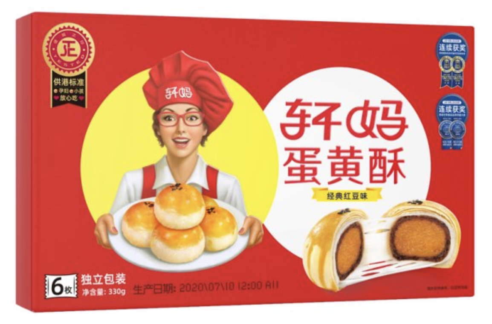

01 · 转型
爆品成功之后，课题变成长期经营
线上流量可以快速放大产品，但长期增长需要稳定的品类认知、品牌资产和线下能力。项目先明确企业最应集中的战略重心。

02 · 壁垒
把产品优势转化为难以模仿的品牌资产
项目围绕品牌名称、产品特征和消费认知建立专属表达，使消费者记住的不只是蛋黄酥，也包括轩妈这一品牌。

03 · 包装
用16大机关解决真实终端问题
包装从品牌识别、产品信息、购买理由到陈列场景逐项设计。所谓机关，不是堆叠元素，而是让每个位置都承担明确的传播或销售任务。

04 · 终端
从电商页面走向线下货架
线下环境中的观看距离、遮挡和同类竞争都不同。统一而醒目的包装系统，帮助品牌在更多渠道保持清晰识别。